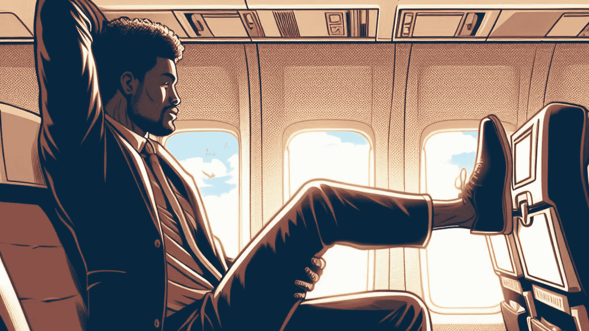

Why You Should Travel Less Often By Plane

Introduction
Are you one of the countless travelers who regularly jet-set across the globe, hopping on planes for work or leisure? While the thrill of soaring above the clouds and exploring new destinations is undeniably exhilarating, have you ever stopped to think about the environmental cost of your adventures? In this article, we'll delve into the pressing issue of air travel and why it's time to consider traveling less by plane.
As the world grapples with the consequences of climate change, individuals are increasingly scrutinizing their own carbon footprint. Flying is one activity that raises significant concerns due to its contribution to greenhouse gas emissions. We'll explore the reasons why you should consider reducing your air travel, the carbon footprint of flying, and the emergence of the flight shame movement.
Table of contents
Why Should I Travel Less by Plane?
The Flight Shame Movement
Understanding Flight Shame: You may have heard the term "flight shame" or "flygskam" thrown around. But what does it mean? It's a movement that has gained momentum in recent years, highlighting the environmental consequences of air travel. More and more travelers are experiencing guilt and shame over their frequent flying habits.
Reducing Carbon Footprint: Flight shame has sparked a crucial conversation about the need to reduce our carbon footprint from air travel. Airlines are being pressured to find eco-friendly alternatives, and travelers are exploring alternative transportation options.
Conscious Consumerism: As the flight shame movement takes root, it encourages people to make more conscious choices when planning trips. This includes choosing trains or buses for shorter distances and opting for eco-friendly airlines when flying is inevitable.
Image: Plane running on hydrogen energy
The Environmental Impact of Air Travel
Carbon Emissions: The carbon footprint of air travel is significant. A single flight can produce a substantial amount of CO2 emissions per person, depending on the distance traveled.
Global Warming: The CO2 emissions from flights contribute to global warming and climate change, impacting ecosystems and weather patterns across the world.
Air Travel vs. Other Modes: When compared to alternative modes of transportation like trains or buses, flying has a much higher carbon footprint. Choosing more sustainable options can significantly reduce your impact on the environment.

Dehydration and Health Concerns
- Dehydration: Did you know that flying can lead to dehydration? The low humidity in airplane cabins can cause discomfort and health issues, leaving you feeling parched and fatigued upon arrival.
- Effects on the Body: Airplane cabin pressure and dry air can also affect your body, potentially leading to symptoms like headaches, dry skin, and even a compromised immune system.
- Health Risks: Long-haul flights may pose health risks, particularly for flight attendants who are exposed to such conditions more frequently. These issues should not be taken lightly.

Traveling by Plane: A Necessity or Luxury?
Air Travel Carbon Footprint
- Calculating the Carbon Footprint: To fully grasp the environmental impact, consider the carbon footprint of a flight, which varies depending on the distance, aircraft type, and the number of passengers on board.
- Per-Person Emissions: On average, how much CO2 does a flight produce per person? The answer might surprise you, and it's a question we must address when considering the impact of air travel.
- Reducing Emissions: Airlines are increasingly working to improve fuel efficiency and reduce emissions. Travelers can play their part by choosing airlines with greener practices.
Is Air Travel Really That Bad for the Environment?
Environmental Impacts: Flying is known to have significant environmental impacts, but how bad is it really? We'll explore the statistics and provide you with a clearer picture of the issue.
Eco-Friendly Alternatives: If you want to travel sustainably, there are alternatives such as taking trains or buses for shorter journeys. They often have a lower carbon footprint and can be just as enjoyable.
Tips for More Sustainable Travel
Reducing Your Carbon Footprint
- Fly Less, Stay Longer: Rather than taking numerous short trips, consider fewer, longer vacations. This reduces the number of flights you take each year.
- Eco-Friendly Airlines: Some airlines are more committed to reducing their carbon footprint than others. Research and choose airlines that prioritize sustainability.
- Offset Your Emissions: You can also offset your carbon emissions by investing in projects that reduce CO2 in other areas, such as reforestation or renewable energy.
Health-Focused Travel
Stay Hydrated: To combat the effects of dehydration while flying, remember to drink plenty of water during your flight. Consider using a hydrating mist for your skin, too.
Move and Stretch: On long flights, take breaks to move around the cabin and stretch. It helps maintain good circulation and reduces the risk of deep vein thrombosis (DVT).
Sleep and Nutrition: Maintain a healthy sleep schedule and eat well before and during your flight. A well-rested and nourished body can better handle the stresses of air travel.
FAQs about Sustainable Travel
Q1: Are airplanes bad for the environment?
Yes, airplanes have a significant carbon footprint, contributing to climate change. The flight industry is actively working to reduce its environmental impact, but it's crucial for travelers to consider alternative transportation options when possible.
Q2: How can I reduce my carbon footprint when flying?
Reducing your carbon footprint when flying involves choosing eco-friendly airlines, offsetting your emissions, and minimizing the number of flights you take. Consider taking buses or trains for shorter distances.
Q3: What are the health risks associated with air travel?
Air travel can lead to dehydration, which can cause symptoms like dry skin and headaches. It's essential to stay hydrated, move around during long flights, and maintain a healthy sleep and nutrition routine.
Conclusion
Traveling by plane is a convenience we often take for granted, but it comes with a hefty environmental price. The flight shame movement has spurred a collective awareness of the need to reduce our carbon footprint and explore alternative transportation methods. By flying less, choosing eco-friendly airlines, and offsetting emissions, we can make a positive impact on the environment.
Moreover, addressing the health concerns associated with air travel is equally important. Staying hydrated, moving during flights, and maintaining a healthy lifestyle are essential steps to ensure that flying doesn't negatively affect our well-being.